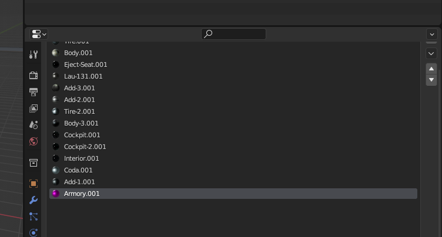

模组开发问题归档
中文 | English
这里记录旧版工具中遇到的问题和当时的排查方法。截图中的参数和入口来自当时的版本。
1. 地图空气碰撞
现象：地图某处存在看不见的碰撞，物体或弹道在该区域被挡住。
当时的排查：选中所有物体，检查是否有绿色碰撞框覆盖该区域；检查复制时是否多复制了一个 Mesh Collider，或把 Mesh Collider 放在了与显示模型不同的位置。


2. 悬挂回弹慢、转弯翻车
现象：车辆悬挂回弹缓慢，转弯时容易翻车。
当时的排查：检查 Wheel Collider 配置。下图为旧文档中称为“默认悬挂配置”的截图，仅作历史示例。

3. 地图炮弹碰撞与显示层级
旧文档用下图记录当时的地图炮弹碰撞与显示层级设置。

4. Blender 材质球重复问题
现象：用 Blender 复制物体后出现重复材质球。
旧文档记录了当时键位设置下两种复制方式得到的材质结果。使用当前 Blender 时，以你所用的键位和实际结果为准。
历史截图：使用 ctrl c 与 ctrl v 后的重复材质球。

历史截图：使用 shift + d 复制物体的结果。